开场、SI / RSI 与 SPIRAL
00:00:01刘博 · 主讲人大家好，我叫刘博。目前在华盛顿大学与Natasha Jaksic合作开展大模型研究，即将前往萨福克大学与MetriY实验室联合攻读计算机科学博士学位。我的主要研究方向是AI for knowledge discovery，主要技术手段是强化学习，尤其是多智能体强化学习。今天介绍的内容，是此前将多智能体强化学习应用于self-improvement，也就是recursive self-improvement（RSI）领域的相关工作。
00:00:51刘博 · 主讲人今天我想探讨的是：这些前期工作与近期热议的RSI之间究竟有什么关系。更多细节大家可以查阅我的个人主页。我们先从R、S、I这三个字母开始拆解——RSI最近是个热门词，但在RSI成为流行术语之前，我一直将自己做的工作称为self-improvement。因此，我打算先厘清RSI中每个字母的含义。比如，首先是Improvement。
00:01:30刘博 · 主讲人Improvement通常指人类研究员主动构建或筛选数据，再用这些数据训练模型；人类自己编写提示、构造任务、生成评测样本，从而训练出性能更强的模型。这种在多个基准上的持续提升，我们就定义为improvement。而当大家开始关注‘self’这个部分时，意味着让人类训练出来的模型，也参与到上述整个过程中——可以想象，把刚才说的三步流程全部转化为可执行的代码。
00:02:12刘博 · 主讲人当前的coding agent已经能编写代码，持续生成训练数据；能基于自身在不同数据上的训练表现，编写代码来设计验证器（verifier）、设计奖励函数（reward）；还能编写代码优化自身代码的运行效率和训练效率。最终实现的是：在多个基准上自主提升的‘自己’。
00:02:44刘博 · 主讲人我举一个简单例子来说明‘self’：模型直接参与提升自身，或者说，将自身作为下一代模型构建过程中的关键参与者——这就是self-improvement。那么，什么是recursive self-improvement？比如第一代模型产出第二代模型，第二代模型又产出第三代模型。这里的‘recursive’意味着：第二代模型在构造效率或某些指标上，优于第一代模型的构造能力。
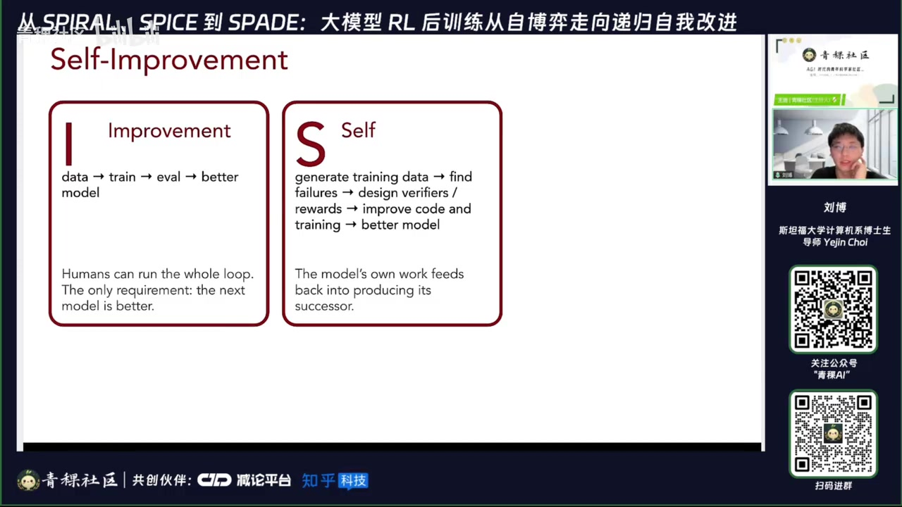
00:03:22刘博 · 主讲人这就引出了‘improvement算子’的概念：A通过improvement算子得到B，B再通过improvement算子得到C；而recursive的核心在于——这个improvement算子本身也在被改进。举个最简单的例子：假设只有一个模型，参数为θ（不包含任何外部模块）。θ编写了一段训练代码F，在英伟达芯片上运行后，得到新一代参数θ′。而θ′又能写出新一代训练代码F′。这里的‘recursive’，是指θ′写出的F′比θ写出的F更高效，即F′能在相同条件下，为任意模型生成更优的下一代模型。
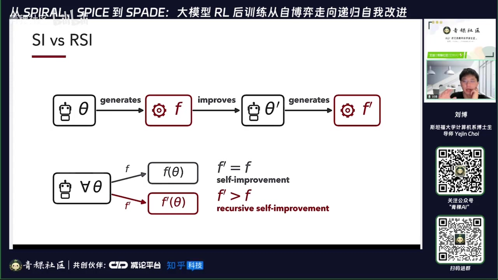
00:04:28刘博 · 主讲人因此，F′在我们定义的若干指标下显著优于F，这才构成recursive self-improvement。以上就是我对RSI的基本理解。前面提到的F，就是一个具体的improvement算子——它是一堆代码，由当前agent（可能不仅是一个模型，还包括配套的harness）编写，用于训练自身。
00:05:05刘博 · 主讲人那么，在当前大模型语境下，这个训练自身的代码F，具体可能包含哪些内容？正如我所说，F就是improvement算子。它可能包括：当前模型所用backbone的相关代码、训练数据生成的代码、评测数据生成的代码（不只是训练，也包括评估）、损失函数的设计与计算逻辑，以及如何用各类优化算法处理这些loss、进而更新模型权重的具体实现代码。
00:05:57刘博 · 主讲人最后，甚至还有和芯片通信的一些代码，比如 kernel code。这些其实都可以被囊括在我刚才说的模型、或者更准确地说，是 coding agent 生成的整套代码中，也就是我提到的改进算子（improvement operator）的一部分。今天这三篇工作，主要都跟数据有关——我想探讨的是：模型如何能自己生成更多训练数据，并且让每一代生成的数据都比上一代更优秀。
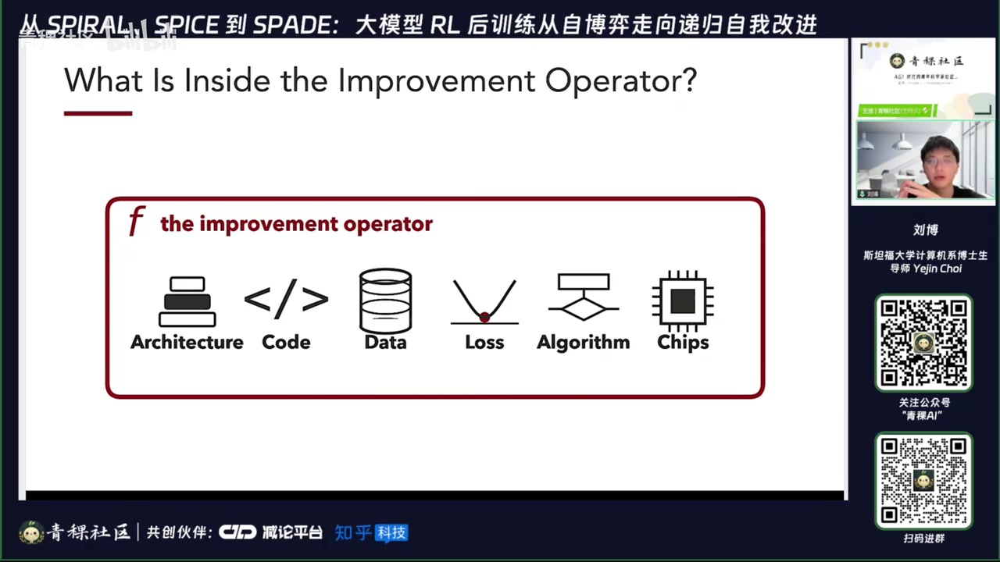
00:06:33刘博 · 主讲人主要使用的方法是 self-play。我一开始就想跟大家厘清 self-play 和 RSI（Recursive Self-Improvement）之间的关系。接下来是一个简要的历史回顾：最早尝试用 self-play 的工作大概出现在 2024 年底，那时 o1 和 deepR1 preview 刚发布。我当时就在思考：RLVR 之后的下一个阶段会是什么？因为当时大家习惯用训练范式来划分时代，比如预训练时代、后训练时代、RL 时代、test-time scaling 时代。我就在想，RLVR 之后，大家会采用什么新的训练方式。
00:07:28刘博 · 主讲人很自然地，很多人会联想到 AlphaZero——于是就想到 self-play。Self-play 基本上是指 agent 自己，也就是模型自身，与自己交互产生数据，并用这些数据来提升自身能力。你可以简单理解为：模型自己生成数据，再用这些数据来提升自己的各种能力。在这个过程中，同一个模型可以分饰多种角色，共同生成这种自我改进的经验（self-improving experience）。
00:08:07刘博 · 主讲人刚才提到，在 Llama-2 之后，很自然就想借鉴 AlphaGo 和 AlphaZero 在游戏领域取得的成功经验，把 self-play 应用到语言模型上，看看它是否也能带来能力提升。事实上，在此前一些大规模适用场景下，self-play 已经被证明非常有效。
00:08:35刘博 · 主讲人它也是系统实现持续自我提升的一项关键技术。回到大模型时代，我的核心想法是：如何把 self-play 应用于大模型的自我提升过程。也就是说，在 RLVR 之后，怎样尽量减少人类参与数据构建——不再依赖人工反复编写、标注、筛选数据，而是把人从‘造数据’这个环节中逐步移除。我尝试用 self-play 来自动化人类在其中所起的作用。
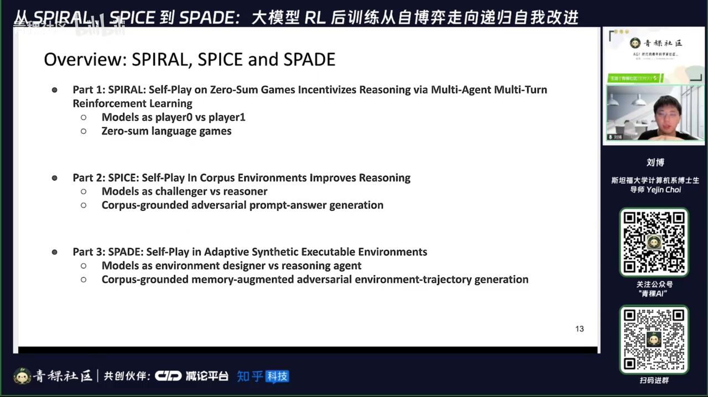
00:09:21刘博 · 主讲人第一篇工作叫 SPIRAL，我前面提到 self-play 中模型分饰多种角色，这里让它分饰两个角色：Player 0 和 Player 1，一起玩一些人为定义的文字游戏。第二篇是 SPICE，它基于给定的医学语料，同样让模型分饰两个角色：Challenge 和 Reasoner。Challenge 负责从预训练语料中不断挖掘有价值的题目和对应答案；Reasoner 则负责回答这些有挑战性、有价值的问题。
00:10:01刘博 · 主讲人第三篇工作同样是基于预训练语料，但进一步结合 agent 当前的 experience，去生成多步、有价值的环境（environment），从而支持 agent 训练。第二篇和第三篇明显代表了两个演进阶段：从 reasoning model（如 o1、deepR1）走向更偏 agentic 的 AI（比如 KMR、KGR 这类系统）。虽然它们分饰的角色基本一致，但任务抽象层级和目标导向已明显不同。接下来，我会详细讲讲这三篇工作的后续发展。
00:10:41刘博 · 主讲人前面两篇我会简要带过，重点放在最新的第三篇。SPIRAL 主要用于语义文字游戏中的 self-play，目标是提升通用推理能力。这项工作是我和 Simon Yu、来自 Goman 的刘子晨，以及来自新加坡的李昂共同完成的，也和 Natalia 合作完成。
00:11:17刘博 · 主讲人这篇工作的动机我快速过一下：2024 年底开始做 self-play 时，我就觉得，当时 thinking model 比 instruction model 更强，关键在于它的 chain-of-thought（CoT）具有泛化能力；而 CoT 所体现的思维模式，正是 thinking model 强大的核心原因。我当时认为，RL 能成功，正是因为它的机制能自动筛选出那些可泛化的 CoT 模式——这就是 RL 的作用。
00:11:58刘博 · 主讲人所以，针对RL的作用，以及它所强调的泛化能力这一动机，我觉得有两个简单的共性：在游戏做决策时，新出现的pattern与已有pattern具有相似性。这里用红字标出的，就是它们思维模式相似的地方，也就是我前面说的‘能泛化’。因此回到刚才的问题——RL能自动筛选出可泛化的思维路径（CoT）。我就在想：能不能让语言模型自己在一些人为定义的文字游戏中进行self-play？
00:12:52刘博 · 主讲人比如两个模型自己下围棋，或者更简单的井字棋、扑克等。这类游戏的reward非常明确——谁输谁赢由规则严格定义，不存在reward设计错误或模糊的问题。那么，在reward完全正确的情况下，这些游戏又需要一定深度的思考。我就想：能否从已预训练好的语言模型中，自动提取出那些可泛化的思维路径（CoT）？这其实类似于围棋：规则确定，剩下的就是在规则内自由探索；而self-play正是实现这种探索的方式。
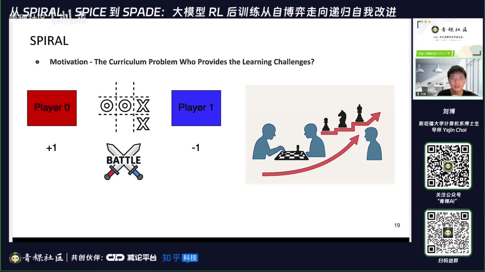
00:13:46刘博 · 主讲人我们选择二人游戏，是因为它有一个关键优势：你的对手也在持续变强。随着对手变强，他会不断给你出更难的题。这就对应了前面提到的RLVR，也包括当前agentic RL所依赖的核心需求——需要越来越难的环境，来匹配模型不断增强的能力。因此，在一批人为定义的双人联合博弈游戏中，随着对手能力提升，你自然会遇到越来越难的问题。
00:14:23刘博 · 主讲人这时你就需要更深入的思考，比如思考更长时间、尝试更多分支，于是那些真正可泛化的新pattern就会被自动筛选出来。需要强调的是，我并不追求在某一个游戏上达到超人类水平——AlphaGo之前已在围棋上取得巨大成功。我关注的是通用性（general），这是self-play在语言模型上必须解决的一个根本问题。
00:14:52刘博 · 主讲人一是通用性（general），二是可扩展性（scalability）——self-play必须能在大规模技能集上有效工作。第二点是，它必须是通用的：我们要提升模型的通用推理能力，而不是把它训练成一个超人类的文字围棋高手——这对我不具吸引力。另外，游戏是人为定义的，所以对错、输赢都很容易判定。这就是整个框架的基本思路。
00:15:24刘博 · 主讲人当时我们构建了一个较早的多智能体、多轮次训练框架。其中，模型同时扮演player 0和player 1：通过注入不同的prompt，使模型基于各自可见的状态信息，分别做出对应决策。还有一个重要设计是做了emergent specialization（新兴专业化），即避免模型过拟合到某一个具体游戏上。这部分优化细节相对简单，我略过不展开——当时用的是标准多轮次训练，没有使用GRPO，而是用Reinforce算法。
00:16:08刘博 · 主讲人此外，我们也加入了一些降低梯度估计方差的baseline技巧，最终确实取得了效果。首先验证了Reinforce配合方差缩减baseline（我们称为RAE）确实有效；图中灰色线代表未加baseline时训练迅速崩溃。由于这是较早期的工作，所用模型规模也较小。但我重点想展示的是：在文字游戏上训练后，模型能泛化到通用数学推理任务上。可以看到下方评测结果，不仅包含游戏类benchmark，还包括一系列经典数学benchmark（如MATH）、以及当时的通用推理benchmark。
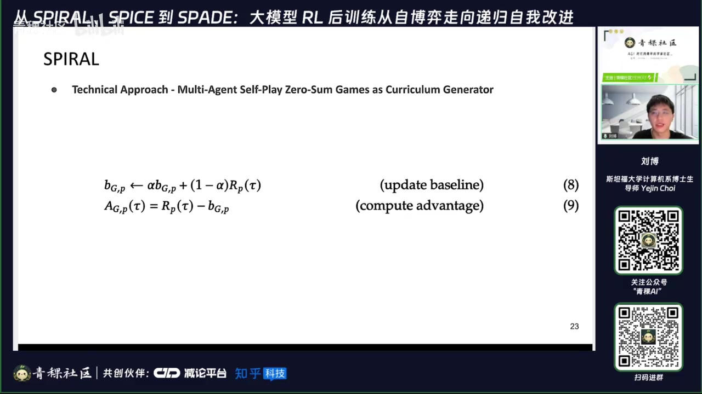
00:17:03刘博 · 主讲人当时SPIRAL reward比较热门，所以我还做了些scaling实验：比如从4B模型扩展到8B，并在不同模型家族上验证，不仅在Qwen上做，也在Llama上尝试，还在一些更强的推理模型（如Distill-Qwen-7B）上做了轻量适配，证明该方法仍能带来稳定提升。这也印证了我最初的动机：在人为设定规则的前提下，通过self-play让对手持续变强，模型就能自动筛选出可泛化的新型思维pattern，从而在数学benchmark上持续增强——比如期望值估计的新pattern、分类讨论等。
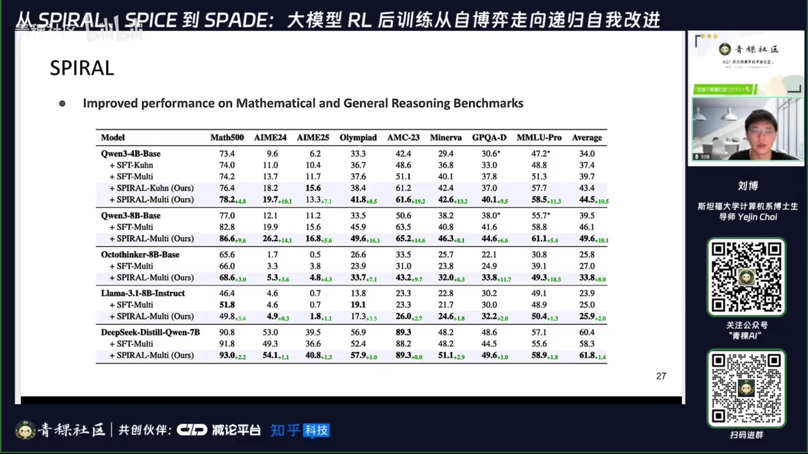
00:18:06刘博 · 主讲人这是一个例子，就是一个经典分类讨论，还有期望估计，这就是 SPIRAL。大概的一点就是——直接说它的局限性：它仍然依赖人为定义的一些文字游戏来做 self-play。这时候的局限性其实很明显：你只是把原本需要人工投入的出题 effort，转移到了设计这些文字游戏的 effort 上。不过它有一点好处：游戏比较简单，仿真速度快，不需要专家出大量题目。
00:18:52刘博 · 主讲人而且人类已经积累了大量现成的文字游戏，拿来就能用。但必须强调，它仍是人类构造的，在人类规则下运行，里面依然嵌入了人类的先验。我反复强调‘人类’，其实是想引出一个更根本的问题：怎么让模型自己给自己真正出题——不光出题目，还要出答案。
SPICE：让模型从语料中自己出题
00:19:23刘博 · 主讲人这就自然过渡到了 SPICE 和 SPADE。它们换了一种建模方式：大致思路和 AppZero 比较接近，即模型自己给自己出题，且题目中不仅包含问题，还包含参考答案；模型再基于这些题目进行求解。接下来的关键挑战是：如何让模型生成通用性强的题目？如何确保答案正确？又如何让题目难度持续提升，从而实现真正的持续进步？
00:20:06刘博 · 主讲人第二篇工作，是我从上述建模思路出发的一次尝试，是在 Meta 期间完成的，主要和我的实习导师 Jason Weston 一起做，叫 SPICE（Self-Play in Correlated Arms）。那是 2025 年 5 月，当时学术界还在努力复现 O121。我当时的一个认知是：O121 高度依赖专家设计高难度题目。
00:20:48刘博 · 主讲人那么，怎么把专家拿掉，让模型自己出题？这就是我和 AppZero 团队共同的出发点。但这里有一个新设定：不再像上一篇那样让模型分饰玩家一和玩家二，而是引入两个角色——Challenge Generator（出题者）和 Reasoner（解题者），也叫 Proposer 和 Solver。
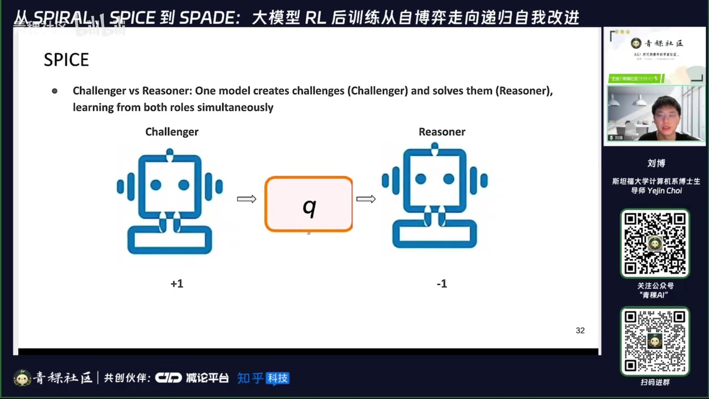
00:21:18刘博 · 主讲人Challenge Generator 负责生成题目；Reasoner 则尝试求解这些合成题目。这是我在 SPICE 和 SPADE 中采用的建模方式。另外需要说明的是，这篇工作的发布时间和 AppZero 很接近。
00:21:52刘博 · 主讲人但我觉得两者的动机不太一样：AppZero 更强调 zero-data，也就是‘无中生有’——让模型凭空生成能难倒自己的题目。但如果真是‘无中生有’，那就意味着大模型只能在它已有知识库（即预训练所学）范围内打转；而知识库本身是固定的，它怎么能在不变的知识基础上持续生成越来越难的新题？我觉得这逻辑上有些问题。我认为一个真正的自我改进系统，一定要和真实世界交互。
00:22:42刘博 · 主讲人要从真实世界中获取可验证的信号，挖掘有价值的信息。比如我们和物理世界交互：物理定律提供了天然保障，我们可以通过实验观察现象，立刻验证某个操作是否产生预期结果。
00:23:14刘博 · 主讲人这种验证结果就是来自物理世界的 ground truth。我们的方法也借鉴了这一点：出题者不是凭空想象，而是和预训练语料交互。预训练语料本身就承载了大量人类经验，包括对世界的各种观察、记录和总结。因此，我把预训练语料看作真实世界的一个缩影。
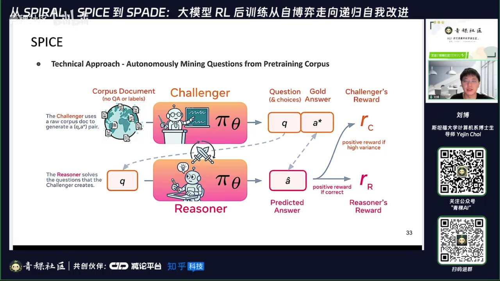
00:23:46刘博 · 主讲人出题者不断与预训练语料交互，从中挖掘有价值的问题，同时也挖掘这些问题可能对应的解答。模型再基于自己生成的题目和答案，尝试去求解。这里面还有一个小创新：对 Challenge Generator（或 Proposer）的 reward 设计。
00:24:22刘博 · 主讲人这个 reward 来自 Reasoner 的回答表现——比如一道题被回答八次，其中四次正确、四次错误，那这道题的 variance 就比较高，说明它有一定区分度，既不太简单也不太难，符合类似 dynamic sampling 或人工筛选中看重的‘适中难度’指标。我们把这个 variance 指标直接作为训练 Challenge Generator 的 reward。一些定性例子表明，模型确实能从文档中逐步学会生成更有深度的问题。
00:25:11刘博 · 主讲人这是 reward 公式的一个展现。这篇工作不仅在前文上做了实验，也在 LA 网上做了实验，并与 R-zero 和 Absolute Zero 对比，在数学和通用推理（general reasoning）任务的半程评估中实现了提升。这里想强调的是：有预训练语料比没有预训练语料效果更好，这也呼应了我前面提到的 MO 去卫。
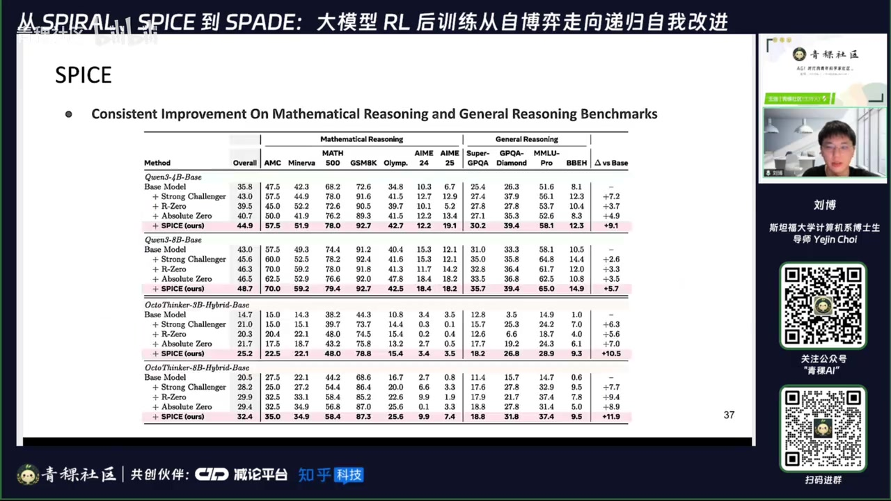
00:25:55刘博 · 主讲人好的，这一篇我打算快速过一下，因为前两篇可能已经花了比较多时间。现在重点讲最后一篇——也就是刚才第二篇讲的是模型如何从预训练语料中挖掘出有价值的单轮（single-turn）prompt 和 answer。
SPADE：让模型生成可执行、可自适应的环境
00:26:26刘博 · 主讲人当时 RLVR 就是单轮设定：给定一个 prompt，模型尝试生成一段很长、有逻辑链（CoT）并附带答案的输出；再将该答案与人类标注的答案或模型生成的答案做对比。这就是 single-turn。而实际上，从 2025 年 1 月起，虽然 R-One 刚刚发布，但 OpenAI 已开始尝试 agent 架构；同期学术界也涌现大量 agent 论文，把 single-turn 推向 multi-turn：一个 reasoning model 演变为 reasoning agent，每个 turn 都会接收一个 observation。
00:27:21刘博 · 主讲人这个 agent 会基于当前 observation 生成 CoT 并输出 action，再把 action 输入 environment；environment 返回下一个 turn 的 observation；接着把这个新 observation 输入 reasoning agent，让它继续生成 CoT 和 action——这就是从 reasoning model 到 reasoning agent 的关键转变，本质是 single-turn 向 multi-turn 的演进。大概在 2025 年 7、8 月，业界已开始讨论 environment scaling。
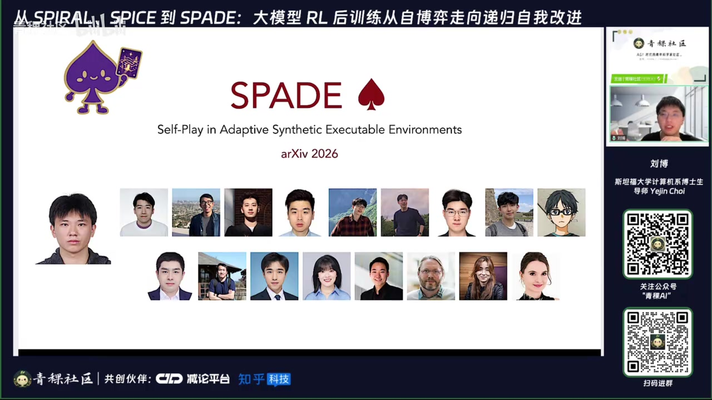
00:28:00刘博 · 主讲人所以 environment 和 prompt-response 这类 pair 的区别，我认为主要有两点：一是 single-turn 与 multi-turn 的差异；二是 environment 具有状态转移特性——每次提供给模型的 observation 输入都不相同。这一点，从第二篇工作就能看出来。
00:28:26刘博 · 主讲人第三篇我想讲的是：如何让模型能自动从预训练语料以及自身的 experience 中，挖掘出有价值的、可直接执行的合成环境（synthetic environment），从而完全无需人工干预。这项工作是我和 Simon、冶金、娜塔莎等众多合作者共同完成的，名为 SPADE。
00:29:09刘博 · 主讲人正如前面提到的，从 2025 年下半年起，陆续出现各种 environment scaling 的工作，核心是探索如何规模化构建各类环境，以及如何在这些环境中开展 agentic RL。很多前沿实验室正投入大量资金购买环境数据，用于前沿模型的训练。这里举一个例子：我们用了 400 个人工编写的环境。
00:30:04刘博 · 主讲人此外还包括一些前沿模型生成的环境——这 400 个人工环境来自前人工作开源发布的环境集；而另一组则是用非常强的模型（比如 GP-5.5）生成的环境，用于在 30B 规模的模型上训练。结果发现：在某些 email 类任务上，性能提升非常有限，甚至出现退化迹象。因此我们意识到，需要设计一种合适的自动课程（automatic curriculum）。
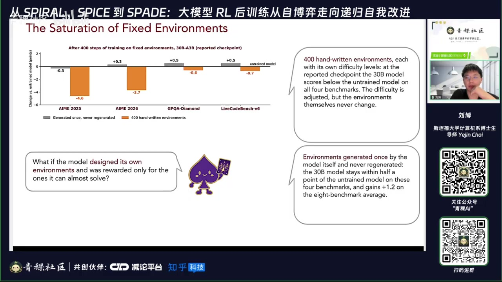
00:30:50刘博 · 主讲人也就是说，不仅要生成有价值的环境，还要配套自动课程设计，动态匹配当前 reasoning agent 的能力水平，筛选出最适合它当前阶段训练的环境。这时候，self-play 就再次派上用场。目前的做法主要有两类：一类是人工编写大量环境，由工程师手动调节难度；另一类是通过复杂 harness 不断生成大量环境。
00:31:36刘博 · 主讲人不管是 to use，还是其他一些 agent 环境，目前主要集中在 to use 或 Web 方向的 environment。另外一种方式是用 prompting 的方法：它有一个具备复杂推理能力的生成环境，并提供 feedback，让这个 harness 能评估当前 agent 表现好不好，再通过 prompting 的方式去调整下一代生成的环境。不过这些方法可能也会受到一些 SPACE ICE 的影响。
00:32:30刘博 · 主讲人但我想重点讲的是，我们仍然可以通过互联网数据或预训练语料，挖掘其中有价值的内容，构建成一个多步、有状态转移、可执行的环境。这就是 SPEED 的一部分动机。刚才我没太展开讲‘可执行’这一点，但它其实非常关键。
00:33:09刘博 · 主讲人我一开始提到的 RSI，是指 AI 自己生成训练自己下一代 model 的过程。在可预见的长周期里，它可能生成的是一个 model-level 的代码，或者是一段很长的可执行代码片段。那么它所生成的环境，也必须是能直接执行的代码片段——这也就构成了我目前所有工作与传统方法的关键区别：我希望 model 能持续地、自主地生成那段长训练代码中的一部分。
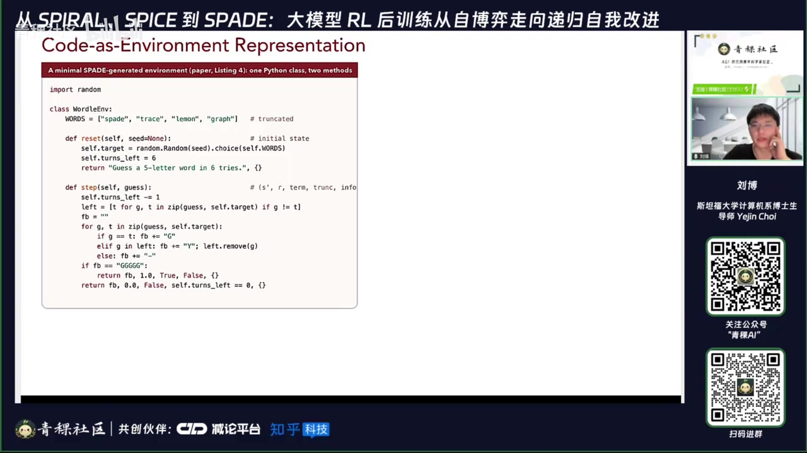
00:33:54刘博 · 主讲人这次新项目中，model 生成的就是 environment 这一部分。因为它必须直接可执行，所以整个过程中不需要任何人工介入，我直接用 code 来代表 environment。但你写 code 就必须让它可执行，得遵循一定的规范。我采用的是从 2016 年开始 open-released 的 Gym interface，里面包含 reset 和 step 函数，可以描述任意具有状态转移、每一步都带 reward 的多步环境。
00:34:42刘博 · 主讲人这里会根据不同的输入来生成环境：比如给一个法律论坛的帖子，它能生成什么？给一个物理题目，它能生成什么？给一个 to use agent 的 trajectory，它又能生成什么？
00:35:01刘博 · 主讲人目标是生成各种可执行的多步环境。比如，给另一个法律帖子，它要能生成一个适合 agent 训练的多步环境；而且它生成的是完整的 code，不是只生成 instruction 或 prompt 这类文本。
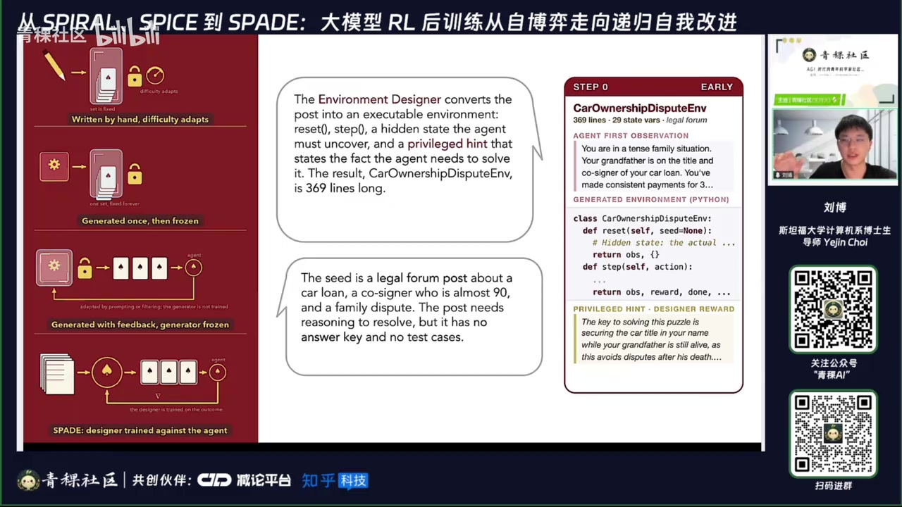
00:35:30刘博 · 主讲人你可以直接用 Python 解释器运行这段 code，拿到 agent 每一步的 observation 和 reward。再比如，给互联网上任意一个物理问题，怎么把它转化成一个多步环境？这就是整个 framework 的大致思路：它仍是模型扮演多种角色——在第二个工作 SPICE 中，我称其为 challenge generator 和 reasoner；而在这个工作中，我称其为 environment designer 和 reasoning agent。接下来我大致过一遍。
00:36:22刘博 · 主讲人比如 environment designer 这个角色，首先会从一堆训练语料中筛选出一些 passage；同时它还有一个 memory 机制，用来存储过往经验：包括已合成的环境，以及对这个环境是否有训练价值的判断指标。这两类信息都存进 memory，之后我们可以随机抽取一些样例 C，作为 input 提供给 environment designer，由它生成对应环境的 code。
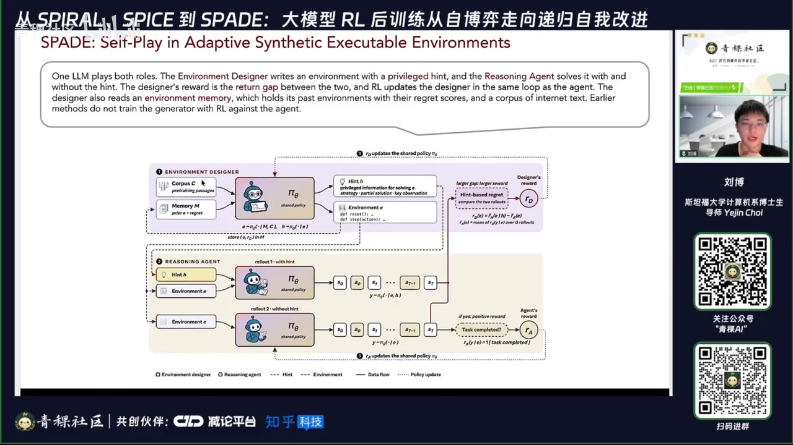
00:37:02刘博 · 主讲人正如前面所说，它直接生成一段长的、可执行的 code；然后基于这段可执行 code，再生成一些关于该环境的额外信息，我称之为 privilege information，也就是 hint。这两部分——可执行 code 和 hint——共同用于 training reasoning agent；而 reasoning agent 是一个支持多步决策的 agent。
00:37:34刘博 · 主讲人它有两个 route：一个是 agent 拥有特权信息（privilege information），也就是关于环境代码的信息，比如环境代码大致长什么样子；同时它还有一条多步的 state-action 轨迹。另一个 route 是 agent 没有这个提示（hint），只有 state-action 历史。这两个轨迹可以算出一个衡量环境是否有价值的指标，我称之为 hint-based regret。待会儿我会具体解释它的含义。这是用来判断环境是否有价值；此外，还会直接计算 agent 的 reward。这两个 reward 加在一起，基本就构成了 self-play 方法的核心。
00:38:26刘博 · 主讲人接下来讲一下 hint：刚才提到，代码生成之后，需要生成一些关于这段生成代码的附加信息。本质上，这些信息是为了支撑我们判断环境是否有价值——我们计算的是 agent 在‘能看到生成代码相关信息’这一条件下的表现。
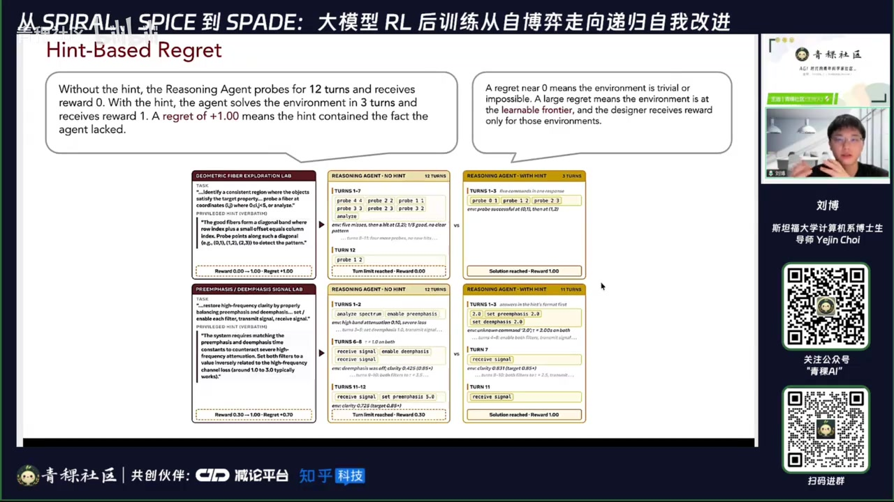
00:38:55刘博 · 主讲人而 VS（即没有 hint 的版本）看不到这些生成代码的信息。如果两者表现差距越大，就说明这个环境越有必要被保留和优化。因为我做了一个假设：如果 agent 能看到生成的环境代码，它就应该能接近最优策略（optimal policy）。所以这个 regret 的定义，其实就是当前策略与最优策略之间的性能差距。
00:39:32刘博 · 主讲人因此，regret 就是 agent 看到代码时的表现，减去看不到代码时的表现。大家也可以形象地理解为：用这种方法可以先筛掉那些‘不可能的任务’——即使看到代码也做不出来。在此基础上，再进一步筛选出那些‘能做出来’或‘make sense’的环境中，哪些具有较大的学习空间。
00:40:08刘博 · 主讲人因为差值越大，代表学习空间越大。把这类学习空间更大的环境挑选出来，就更适合作为当前 agent 的训练环境。这里确实像 SPICE 一样，引入了一个 curriculum 机制：给定相同的输入，我们会特意筛选。因为很多环境模块在不同阶段会被重复选中。
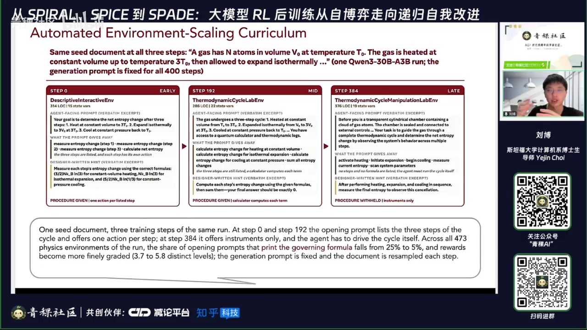
00:40:35刘博 · 主讲人在不同训练阶段，针对相同的输入，系统能根据 agent 当前能力的变化，动态生成更难的环境，以匹配提升后的 agent。反过来，如果 agent 训练崩了、性能变差，系统也能自动选出难度更低的环境，帮助它重新起步。这就是所谓自动课程（automatic curriculum）的优势。
00:41:11刘博 · 主讲人我首先在 4B、8B、30B 这几个参数量级上进行了训练。左图展示的是它生成的一大批文字类环境（暂且称为‘游戏’）。这些环境基于非常广袤的预训练语料构建，因此能覆盖多种领域：比如从法律论坛语料中生成法律相关的环境，从物理相关内容中生成物理相关的环境。所以严格来说，它们不一定是‘游戏’，但目前统一称作游戏。
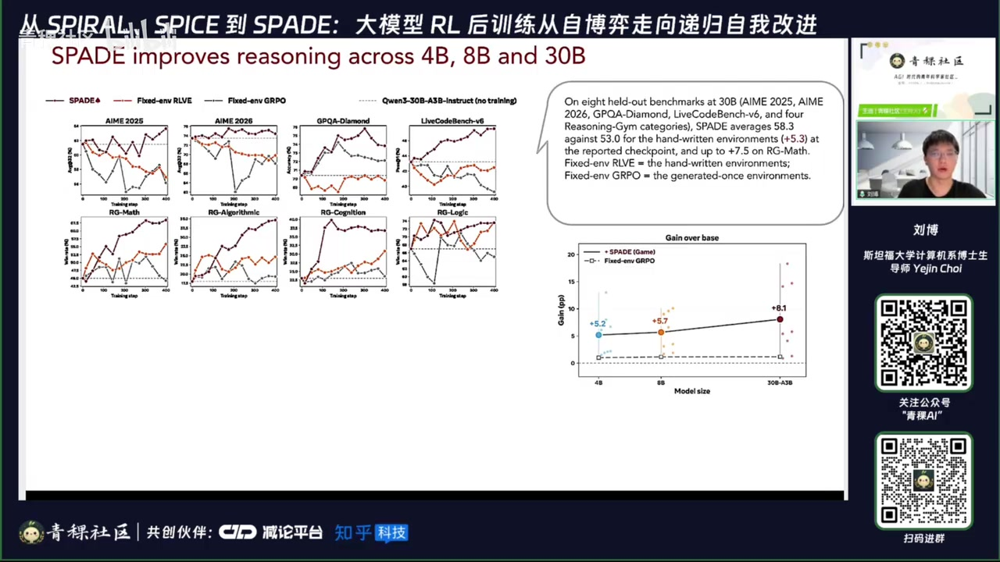
00:41:52刘博 · 主讲人它在八个 email benchmark 上持续实现了不错的提升，并且在 30B 模型上效果尤为显著。而且我发现，模型尺寸越大，这种提升越明显——这也是我特别喜欢的一个现象。此外，我不仅尝试生成简单游戏，也尝试生成更复杂的环境，比如多轮交互（multiturn）的 to-use 类环境，并在 to-use benchmark 上测试，同样在 30B 规模上取得了良好效果。
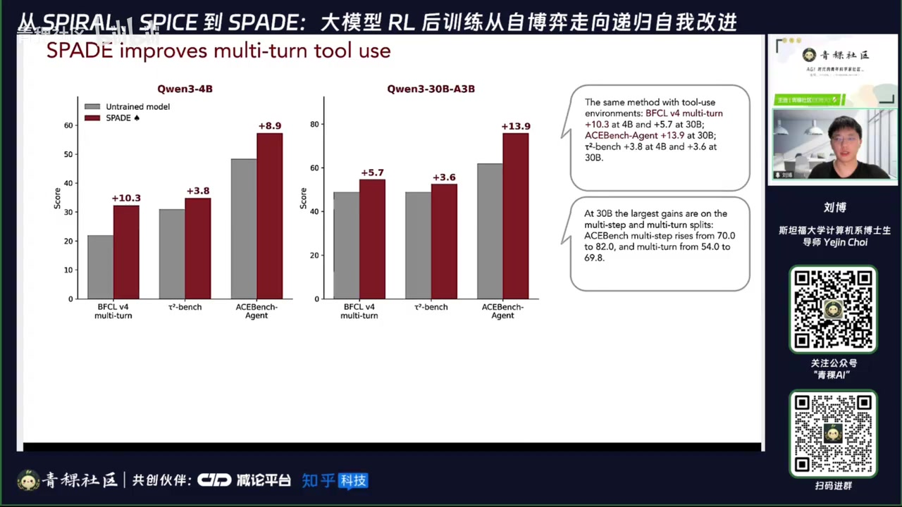
00:42:43刘博 · 主讲人为什么这很重要？第一，前面说的 regret——即‘能看到代码信息’和‘看不到代码信息’两种情况下的表现差——它不只是靠定性分析或个别例子来验证，而是确实在每个训练步骤中，都能为模型挑选出更有价值的环境。第二是多样性（diversity）：我们需要衡量生成环境是否足够多样。
00:43:27刘博 · 主讲人刚才提到的‘有价值’这个指标，是用来筛选环境的依据；而多样性，则对应我第二篇工作中探讨的重点：一定要让 agent 和真实世界交互。医学语料中的多样性，就保障了所生成环境本身的多样性。
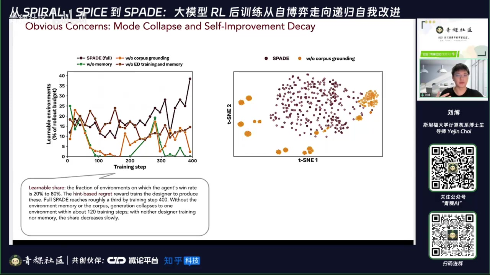
00:43:55刘博 · 主讲人对，所以这个环境还是要动态调整。比如目前从 TILA 的实践来看，更多是人工生成一批环境，再由人筛选，形成一个预设的课程；而 CellPlan 就尝试把这个过程自动化——用前面提到的那些指标来训练环境生成器，让每次生成的环境都恰好适配当前 agent 的学习阶段。
00:44:35刘博 · 主讲人第二点是，互联网其实是一个比较小的、迷你版的现实世界，同时也是一个不错的挖掘有价值环境的来源，还是要尽量用起来。最后一点是，环境本身是 RSI（Recursive Self-Improvement）中提升算子（improvement operator）的一部分——回到 improvement operator 这个概念，我们希望 AI 能够……
00:45:17刘博 · 主讲人越来越强。比如从算法角度看，它会变得越来越简洁、高效；从代码运行效率看，它能跑得越来越快；而且这种提升不光是软件层面的，也包括硬件层面——未来某一天，AI 甚至可能自己生成用于训练自身的专用芯片。至于 self-play 和 RLVR 的关系……
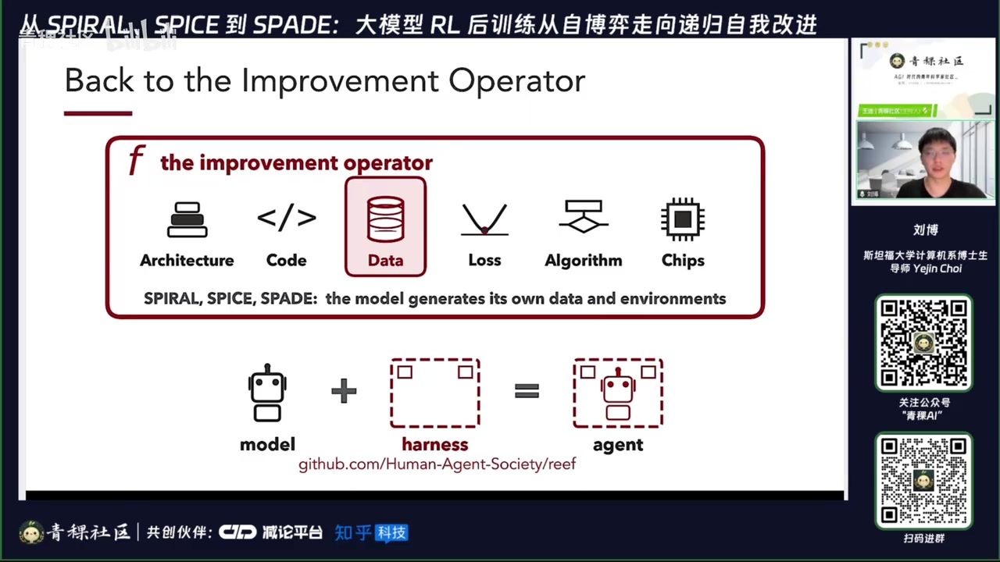
00:45:47刘博 · 主讲人我们想问的是：这部分代码——准确说是 data 相关的代码——怎么让 AI 完全自主地写出来？刚才展示的只是 improvement operator 中的一种能力，其他部分还需要进一步自动化。这就是我今天想分享的主要内容，谢谢大家。
现场问答
00:46:32主持人好的，感谢刘博的精彩分享。接下来进入互动环节，直播间的朋友可以抓紧时间提问，也可以看看聊天框里的问题。我先结束屏幕共享，这样就能看到聊天内容了。
00:47:10刘博 · 主讲人RLVR 和 self-play 不是正交关系——至少在我的用法里，self-play 本身就包含 RL 成分，因为它本质上是在优化两个 reward。只不过在 self-play 中，模型要自己完成对这两个 reward 的联合优化；而这两个 reward 具有对抗性，可以接近零和，也可以不那么极端，但总体上存在一定的对抗关系。
00:47:58刘博 · 主讲人关于如何‘隐藏答案’，确实靠的是 hint。我们设计了一个专门生成 hint 的 prompt，核心是：不能把 environment code 的正确答案直接暴露出来，否则就会出现 reward hacking。这个 hint generation prompt 我们也调优过。第二个问题提到‘怎么确保生成的环境代码真的合理’——我用了多种 heuristics：第一是确保它能正常运行；
00:48:40刘博 · 主讲人第二是用 probe 方式验证，比如执行不同 action 时，reward 确实随之变化；第三是结合一些 heuristics 判断逻辑是否自洽，再加上 L1-level 的 self-check。第三个问题关于互联网信息与可交互环境的关系：模型可以从互联网上非常粗糙的信息中提炼出有价值的内容，并把它转化为符合规范、可执行的代码。
00:49:13刘博 · 主讲人比如一道物理题或一段物理讨论，模型能把它拆解成一个可执行的物理实验环境：第一步给你几个 action 选项；你选一个后，环境会告诉你发生了什么；接着再给出三个新选项，再反馈结果，如此循环推进。
00:50:03刘博 · 主讲人我稍后可以提供一个 demo 网站，大家可以去试用。上面列出了所有已生成的环境题目，你可以直接在网页上点击运行，和环境实时交互，观察每一步 action 会触发什么反馈。
00:50:48刘博 · 主讲人关于‘循环无法进步’——这确实是可能的。在 self-play 中，比如围棋这类游戏具有传递性：A 能赢 B，B 能赢 C，通常 A 也能赢 C。但有些游戏不具备这种传递性，可能出现 A 赢 B、B 赢 C、C 又赢 A 的循环。因此 self-play 虽然能收敛到某种均衡，但这个均衡未必是一个真正优秀的策略。
00:51:37刘博 · 主讲人所以在 self-play 领域，会有更多方法来确保模型学到一个更好的均衡，在平均意义上打败更多对手。比如，一些 population-based training 方法会被用于大型游戏 AI，像 PSRO，如果有兴趣可以去了解这个关键词。那么 self-play 下一步的方向是什么？其实我觉得，目前它只是——比如真要做 RSI 的话——self-play 只是刚才说的，在当前场景中，仅用于生成数据。
00:52:36刘博 · 主讲人而这些数据，在当前模型发展的阶段，对应的是环境（environment）。我刚才提到，跟 environment 最接近的，是你有了 environment 之后，从中获得 reward，再用 reward 去更新自身，也就是 R 算法。目前 R 算法还是人工设定的，比如用 PPO、REINFORCE 或其他方法。现在也有很多工作开始尝试搜索更优的 R 算法。
00:53:07刘博 · 主讲人我的意思是，比如 David Silver 团队也尝试用不同方法搜索更好的 R1 算法。这其实就是 RSI 必经的路径：大家现在都在往 R 里塞东西，那下一步是什么？比如让模型随着自身变强，生成更好的 R 算法。另外，能否通过特定类型的博弈，或者设计博弈课程，来诱导某种推理能力？我觉得是可以的。
00:53:49刘博 · 主讲人比如，如果你让模型在 social deduction 类游戏，或 debate 类游戏中做 self-play，就有可能筛选出更能说、更善变的新 pattern。这样，你刚才提到的某一类推理能力，就可能被诱导出来。至于在什么条件下结构化游戏环境比非结构化更适合——
00:54:33刘博 · 主讲人我觉得在任意条件下都是如此，因为我们的目标是 automate。非结构化语料环境本身是非结构的。先说明一下：我的 SPICE 和 SPADE 两篇工作，其实都基于非结构化语料环境，只是把它们转化成了特定形式——第二篇是 prompt 和 answer 这种 single-turn 的数据形式；第三篇则转化成了 code，也就是你刚才说的结构化环境。我们整体思路都是把原始非结构化数据，逐步转化为结构化表示；prompt-answer 本身也是一种结构化体现。关于 SPEED environment memory 如何储存：在 SPADE 里，memory 储存了过去生成的所有环境代码，以及衡量这些环境代码是否有价值的指标。
00:55:50刘博 · 主讲人我刚才提到的 hint-based regret，就是直接储存的。检索时，每次从我定义的 regret 中选取一个 threshold，在 high-regret 样本里随机采样两个正例，直接放进 prompt 里。我想强调的是：过去的输出，确实有助于当前的输出。但具体机制并没有做非常深入的设计，这属于 follow-up work，是未来要探索的方向。
00:56:39刘博 · 主讲人Self-play 和 collaborative multi-agent 怎么看？首先，self-play 是一种 competitive multi-agent 方法；而它和提问中提到的 collaborative multi-agent，其实是并行的关系。
00:57:01刘博 · 主讲人我想补充的是，比如 OpenAI 可能更倾向 collaborative multi-agent 方法，不一定特别偏好 competitive multi-agent。之前和 Noam Brown 讨论时，他就提到 OpenAI 内部可能更侧重 collaborative multi-agent 的研究。他对于 collaborative multi-agent 的看法是：它能更有效地利用 test-time compute。这句话你应该就差不多明白了。
00:57:41刘博 · 主讲人迁移机制是什么？其实我没有给出特别形式化的解释，因为刚才说的，更多是基于对 O1 和 R1 的理解。
00:57:55刘博 · 主讲人我觉得thinking model的CoT模式能够泛化。比如‘wait’‘but’这些词高频出现，思考时间越长，这些词出现的频率就越高，而这种高频出现越有助于正确答案的生成。这广义上被称为test-time scaling，或者test-time compute scaling。之前也有报告提到，比如姚舜宇认为这种泛化能力与CoT机制的可解释性有关。
00:58:41刘博 · 主讲人其实我对机制可解释性的研究并不深入，所以这里想探讨的是：RLVR是否能筛选出大模型内部那些可泛化的circuit，从而让模型在需要推理的领域——比如数学任务中，在不同prompt下也能激活这些circuit，实现泛化？这正对应我前面提到的‘wait’‘but’等词的高频出现现象。那么，零假设（null hypothesis）在多大程度上限制了这些框架？灵活的假设很有必要，因为对抗性self-play依赖自动化课程设计。
00:59:44刘博 · 主讲人这个问题就解释到这里。策略循环的问题在于：它生成的题目可能不够难；当前的进步瓶颈之一，是我希望能有更多资源去观察skill——也就是这个方法能否在更大的模型上生效。另外，当模型尺寸变大后，可能需要更复杂的环境生成方法，才能构造出真正有挑战性的环境。简单地向预训练语料中注入一些内容，很可能不足以生成让模型感到困难的环境。
01:00:38刘博 · 主讲人那这时候就要通过一些复杂的harness之类的机制去生成——你得至少一开始用某些机制生成一些比较难的题目；不然的话，肯定还是人工出题更靠谱。包括现在人工出的题也还没有穷尽。但今后一定会出现这个问题。所以进步瓶颈的第一个就是存在starting point的问题。
01:01:05刘博 · 主讲人第二个瓶颈是self-play本身的训练不稳定性。我们希望它能持续进行self-play，并实现持续提升。但2值化策略容易坍缩到单一模式上——因为该模式reward很高。如果想维持多个策略模式，可能就需要显式引入多个策略。
01:01:37刘博 · 主讲人对，R1会坍缩到一个reward很高的模式上；否则就得调整reward设计。好，我觉得这就是所有问题了。